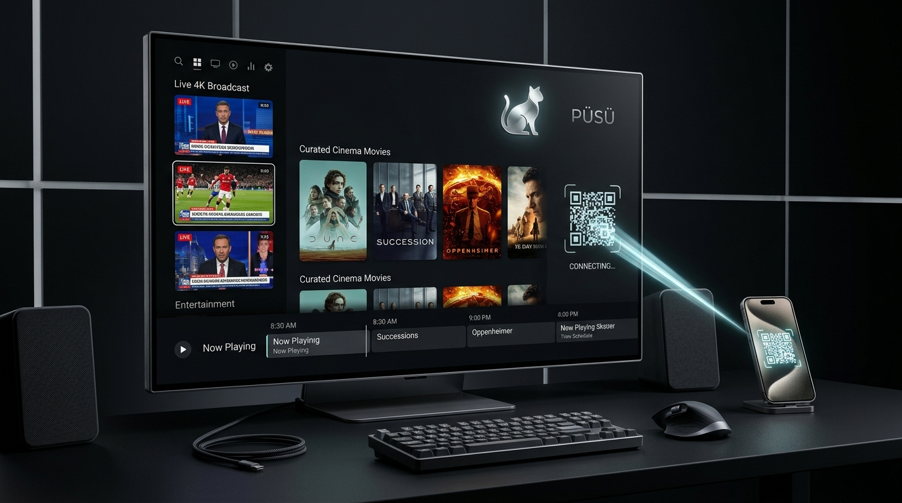
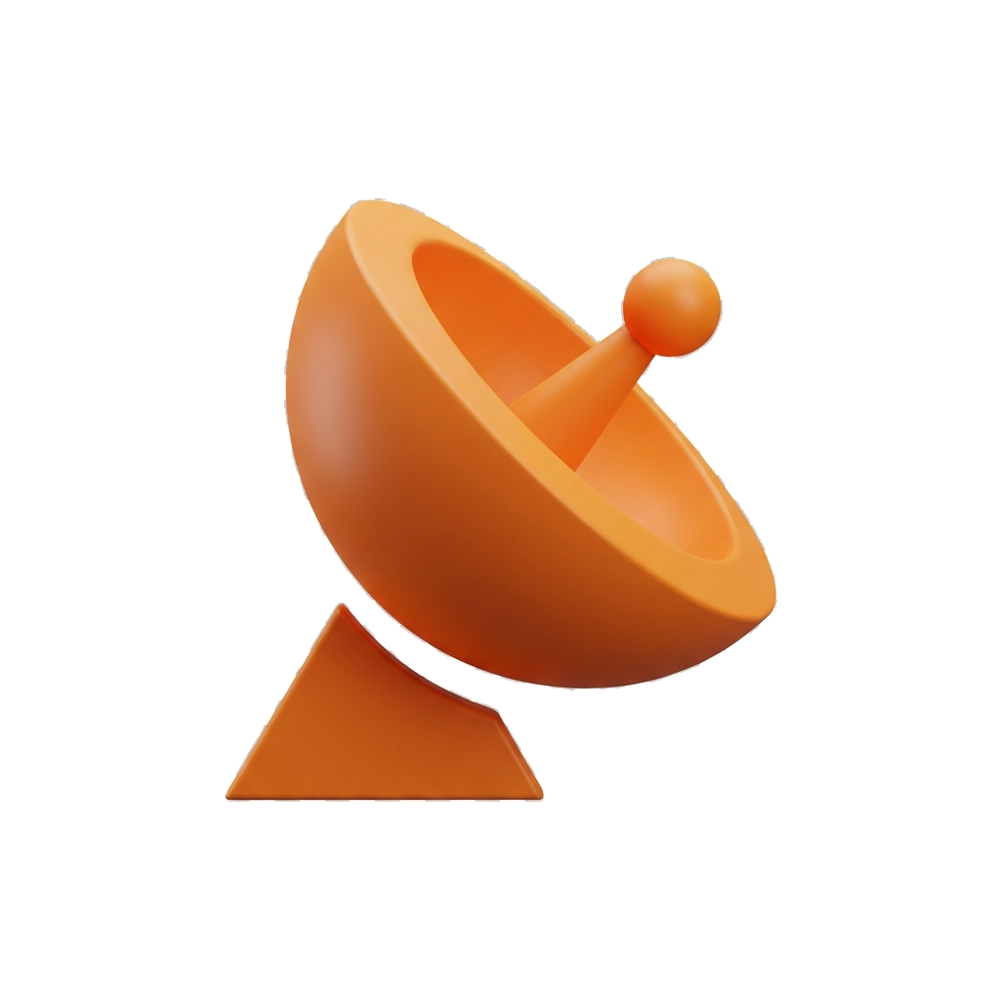
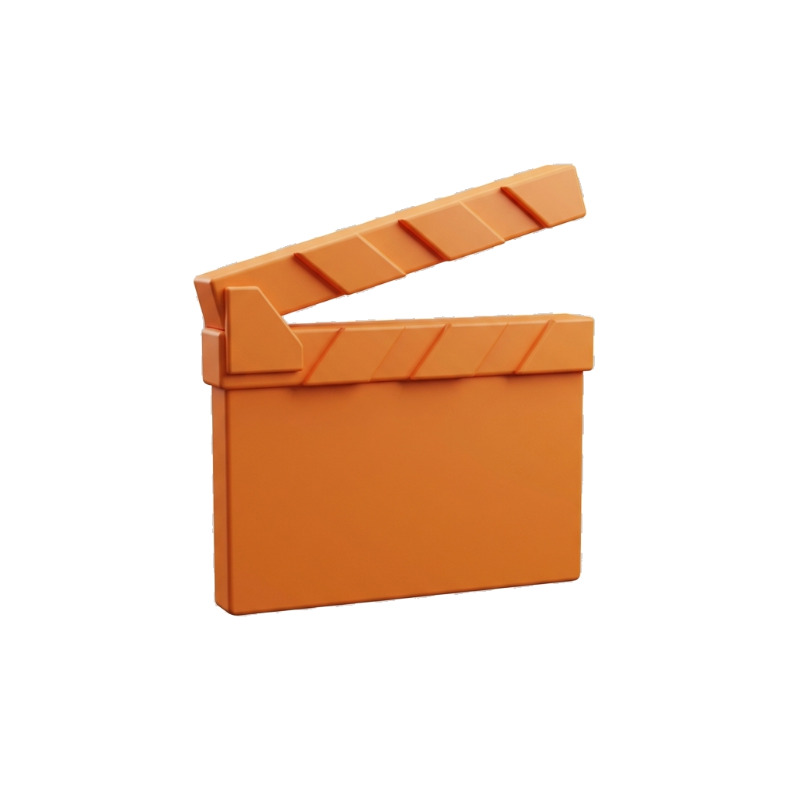

Kelime Avcısı
v1.61000+ seviyeli, çevrimdışı oynanabilen modern Türkçe kelime bulmaca oyunu.
Uzaktan kumandayla uzun M3U linkleri veya şifreler yazma devri bitti. Telefonundan QR kodu okut, yayın listen 0.2 saniyede televizyonuna ve bilgisayarına aksın.

TV veya bilgisayar ekranında beliren 6 haneli kodu aşağıya girin ya da telefon kameranızla QR kodu okutun. Xtream hesaplarınız, M3U linkleriniz veya .m3u dosyalarınız anında ekrana düşsün.
Sunucu URL, kullanıcı adı ve şifrenizi telefondan yapıştırıp tek tıkla TV'ye aktarın.
Xtream GönderUzun yayın listesi linklerini hiç harf hatası yapmadan saniyeler içinde cihaza yollayın.
M3U Link GönderTelefonunuzdaki veya bilgisayarınızdaki M3U dosyasını seçip kablosuz olarak TV'ye yükleyin.
Dosya YükleTüm hesaplarınızı, favori sıralamanızı ve PIN ayarlarınızı tek paketle tüm cihazlara kopyalayın.
Profil EşlePüsü IPTV, sıradan web tabanlı oynatıcıların aksine doğrudan GPU donanım hızlandırmalı LibVLC / ExoPlayer çekirdeğiyle çalışır.

İzlediğiniz canlı maçı veya filmi kayıpsız olarak diskinize kaydedin, tek tuşla yüksek çözünürlüklü ekran görüntüsü alın veya Picture-in-Picture (PIP) ile pencereyi küçültüp çalışmanıza devam edin.
Hangi kanalda ne var anında görün, kaçırmak istemediğiniz yayınlara bildirim kurun.
İstediğiniz kadar Xtream ve M3U hesabını aynı anda ekleyin, hesaplar arasında beklemeden geçiş yapın ve favori kanallarınızı sürükle-bırak ile sıralayın.
Bilgisayarınızda hazırladığınız kanal listesini, gizli kategorileri ve ebeveyn PIN kilidini tek bir .pusu paketiyle televizyonunuza ve telefonunuza aktarın.


Cihazınızı otomatik tanıyan hibrit arayüz: Televizyonda D-Pad kumanda odak hafızası ile pürüzsüz gezinme, telefon ve tablette ise dokunmatik jest kontrolleri.
Telefonunuzun kamerasını okutarak Püsü IPTV Google Play sayfasına doğrudan gidebilirsiniz.
Aradığınız içeriğe saniyeler içinde ulaşmanız için tasarlanmış yüksek kontrastlı 4 ana medya modülü.

50.000+ canlı kanal listesinde sıfır takılmayla anında arama, kategori filtreleme, canlı EPG ve 4K yayın kaydı.

Film afişleri, IMDb puanları, oyuncu kadrosu, özet bilgileri, çoklu altyazı/ses seçimi ve kaldığın saniyeden devam etme.

Sezon ve bölüm ağacı, izlenen bölümleri otomatik işaretleme ve bölüm bittiğinde tek tıkla sonraki bölüme geçiş.

Özel favori sıralama, istenmeyen kategorileri gizleme, ebeveyn PIN kilidi, hız testi ve .pusu bulut yedekleme.
Yeni sürüm duyuruları, kurulum yardımlaşması ve özellik önerileri için resmi Telegram ve Facebook topluluklarımızdayız.
Win 19.3.0 & Android güncellemeleri, anlık duyurular ve geliştiriciyle doğrudan iletişim.
Kullanıcı deneyimleri, Android TV & PC kurulum ipuçları ve topluluk paylaşımları.
 Maskotumuz Püskül
Maskotumuz Püskül
Püsü IPTV, adını ve çevikliğini sevimli dostumuz Püskül'den alıyor. Bir pati darbesi kadar hızlı kanal geçişleri, keskin bakışlı metalik amblemimiz ve ev konforu onun enerjisiyle tasarlandı.
Püsü IPTV tamamen reklamsız ve bağımsız olarak geliştirilmektedir. Projeye güç katmak için bir kahve ısmarlayabilirsiniz.
1000+ seviyeli, çevrimdışı oynanabilen modern Türkçe kelime bulmaca oyunu.
Türkçe atasözleri ve deyimler sözlüğü, interaktif kültür ve eğitim projesi.
Okul yönetim, öğrenci takip ve performans analiz masaüstü sistemi.